Diagram Templates
Twelve ready-made diagrams, rendered here exactly as the framework draws them
DiagramTemplates.All exposes twelve template factories that return a DiagramDto; load one with DrawingManager.LoadTemplate(dto) and it materializes on the canvas with connections intact. The editor sample lists them in the Templates menu.
Loading a template
using Beep.Skia;
if (DiagramTemplates.All.TryGetValue("ERD - E-commerce schema", out var factory))
{
drawingManager.LoadTemplate(factory());
drawingManager.RequestRedraw();
}
// Or enumerate them for a menu
foreach (var name in DiagramTemplates.All.Keys)
Console.WriteLine(name);Gallery
- Flowchart — Order validation
- Flowchart — Purchase approval
- ERD — E-commerce schema
- ETL — Data warehouse pipeline
- DFD — Order system (level 0)
- UML — Class diagram
- Network — Social graph
- Mind map — Product strategy
- Business process — Purchase approval
- Project management — Sprint plan
- State machine — Login process
- State machine — Order lifecycle
Flowchart — Order validation
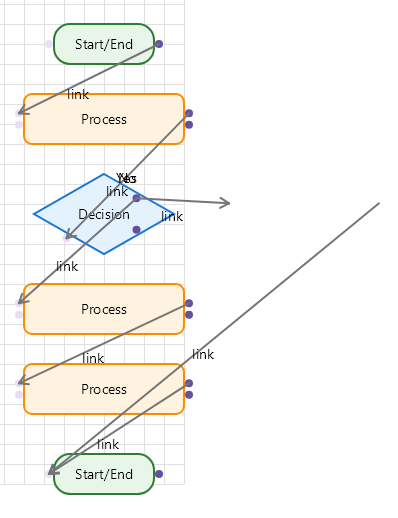
The canonical flow: receive the order, validate it, branch on validity, then process payment and ship, or notify the customer. Good starting point for the flowchart tutorial.
Flowchart — Purchase approval
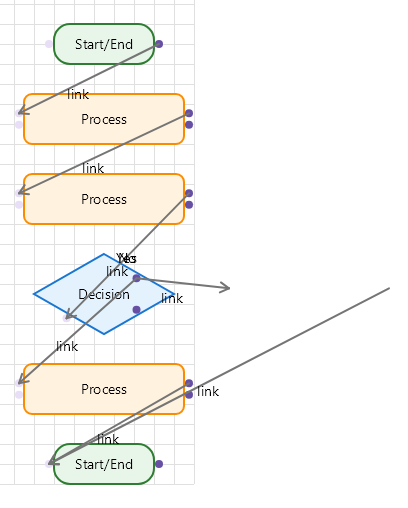
ERD — E-commerce schema
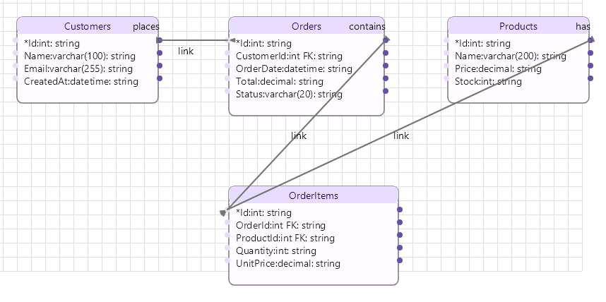
Shows row-level connections (the ports sit on individual columns), relationship labels and multiplicity markers. Export it with the DDL exporter.
ETL — Data warehouse pipeline
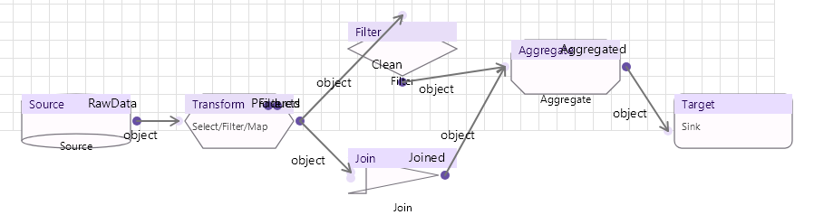
Extend it with lookups, SCD and profiling as in the ETL tutorial.
DFD — Order system (level 0)
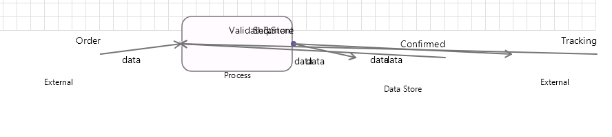
Network — Social graph
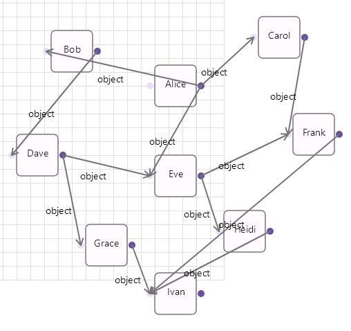
Mind map — Product strategy
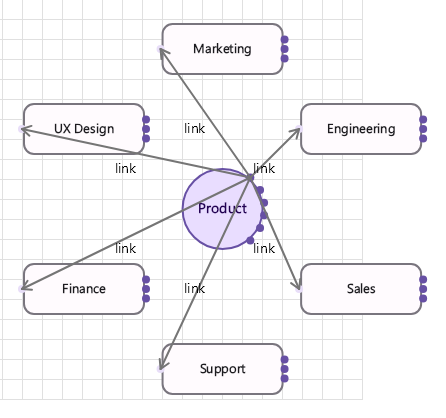
Business process — Purchase approval
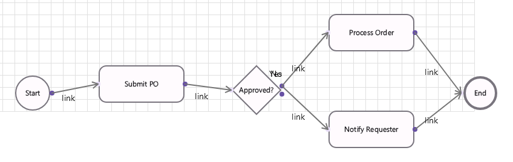
Round-trips through BPMN XML — see the BPMN tutorial.
Project management — Sprint plan
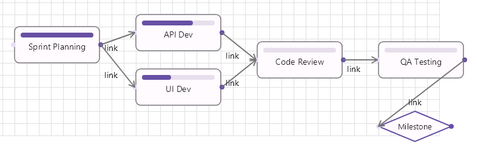
Compute the critical path and add a Gantt timeline as in the PM tutorial.
State machine — Login process
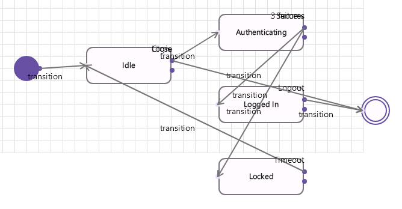
State machine — Order lifecycle
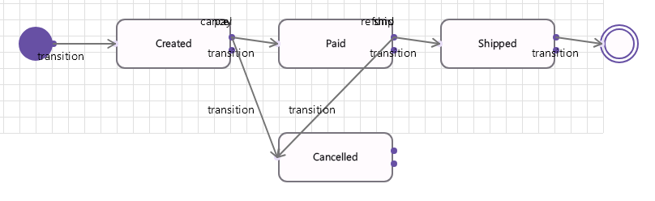
Add triggers, guards and actions as in the state machine tutorial.
Regenerating these images
Every image on this page was produced by the framework itself, not by a drawing tool. The generator lives in the test suite and is opt-in:
$env:BEEP_SKIA_GENERATE_DOC_IMAGES=1
dotnet test Beep.Skia.Tests/Beep.Skia.Tests.csproj --filter DocumentationImageGeneratorIt writes Help/assets/templates/*.png (and the family grids under Help/assets/families/) by loading each template into a DrawingManager and drawing it to a Skia surface.